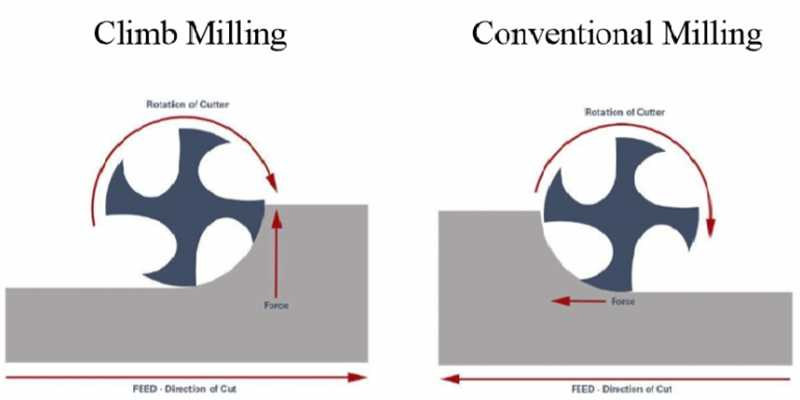
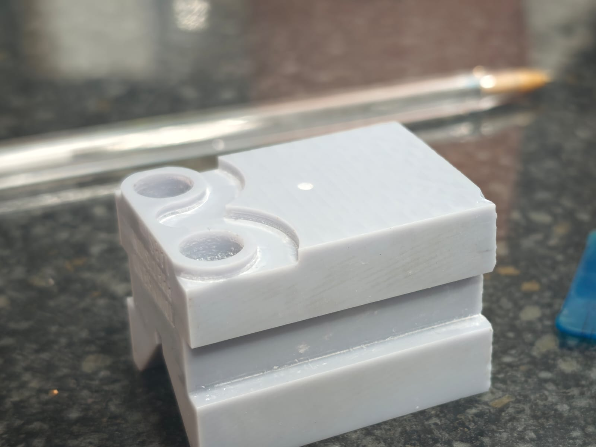

CNC first actual test
Even though I’m using the CNC for cleaning up the faces of the vee blocks, CNC is still pretty new to me. I know of it, and I know some terminology and techniques, but nothing like my CMM ability. It does help that they are a little similar, as they both use Cartesian coordinate systems, but the actual functions vary massively.
For example, there’s climb and conventional milling. Which side you cut the material from makes a difference to surface finish, quality, and even size.

Not only that, there’s loads to consider: speeds, feeds, stepdown, stepover, coolant or not, and plenty more. I could go on forever, because there is so much that controls how a CNC performs the cut. Even tool definitions can be complicated for a newbie.
Anyone who knows me knows that when I see something I have no idea about, I personally take that as a challenge. Plus it would be advantageous to understand machining techniques, since I’m the one measuring the result. This could help with defining how to check a feature within inspection.
I’m not going to go through each setting I defined, because that’s boring and people know better than me anyway, but I’ll highlight what I learned from it.
Face milling
When face milling, it’s ideal to only cut in one direction. The change of direction alternates between conventional and climb milling, which creates a step on the face between cuts and doesn’t give the best surface finish.
My fault. I left the settings default and forgot to change it to climb mill only.
Surface finish
My surface finish wasn’t great overall on the part. This was likely due to tool selection. I had switched to a 6 mm 2-flute cutter to trial aluminium cutting, but didn’t change it before cutting the resin part.
I initially blamed the flute count, but that was too broad: flute count alone does not say whether a cutter has a full-length cutting edge. On this trial the cutter, resin, feeds, speeds, stepdown, chip clearing, and setup could all have contributed to the poor finish. I still need controlled trials before drawing a conclusion.
I’ve been told I should be able to chew through it, and I’ve been taking half a mil cuts, which is likely too small and causing friction. This explains why I got poor surface finish all over, even when doing circle cuts inside the 10 mm bore.
Anyway, it’s all learning. I’m going to try modelling some new features, mainly contouring, facing, and some spiral hole making, and give it another go.
I’m getting lots of feedback from actual machinists, which really helps with what to change and what to consider when setting the job up.
The CAM software itself is relatively easy. Once I understand which settings affect which things, that makes it even simpler. It also visualises and simulates my tool paths, which is a useful check. It cannot guarantee the real machine will avoid a crash: the stock, workholding, tool, offsets, limits, and machine state still have to match the model.
I’m really enjoying learning CNC. It’s very satisfying to program something and end up with a complete product, unlike CMM where you don’t end up with anything physical, bar an inspection report.
It’ll also aid me a lot in the ability to manufacture parts to different tolerances. Since there will be requirements for specialist fixturing, I need the capability to finish printed components to a high quality — and within tolerance, of course.

For now, it’s another step forward and another reminder that the measuring side and the manufacturing side are linked more closely than I first realised.